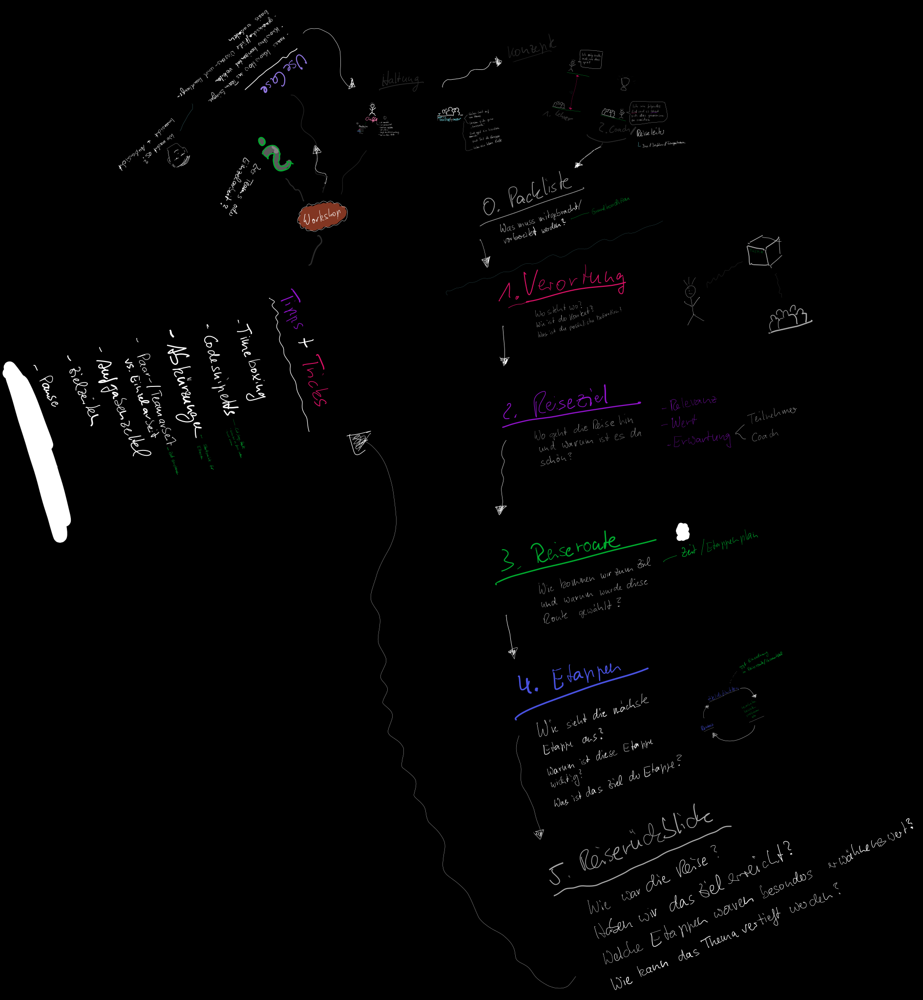

<section class="section">
	<div class="container">
		<div class="content">
			<div class="columns">
				<div class="column is-8"><h1>{{ page.titel }}</h1>
				</div>
				<div class="column is-4 has-text-right">
					{% include reading-time.html %}
					<!--a target="_blank" href="https://github.com/th-koeln/mi-bachelor-gdvk/edit/master/{{ page.path }}"><span class="icon"><i class="fa fa-edit"></i></span> Bearbeiten</a-->
				</div>
			</div>
		</div>
	</div>
	<hr>
	<div class="container zweispalter">


<div class="svg-viewer">
  <div class="svg-viewer__controls">
    <button class="button is-small" onclick="svgZoomIn()">Zoom +</button>
    <button class="button is-small" onclick="svgZoomOut()">Zoom −</button>
    <button class="button is-small" onclick="svgRotateLeft()">&#8630; Drehen</button>
    <button class="button is-small" onclick="svgRotateRight()">&#8631; Drehen</button>
    <button class="button is-small" onclick="svgReset()">Zurücksetzen</button>
  </div>
  <div class="svg-viewer__stage" id="svgStage">
    
  </div>
</div>

<style>
.svg-viewer { width: 100%; margin-bottom: 2rem; position: relative; }
.svg-viewer__controls { display: flex; flex-wrap: wrap; gap: .5rem; margin-bottom: .75rem; position: relative; z-index: 10; }
.svg-viewer__stage {
  width: 100%;
  aspect-ratio: 16 / 9;
  overflow: hidden;
  border: 1px solid #dbdbdb;
  border-radius: 4px;
  display: flex;
  align-items: center;
  justify-content: center;
  cursor: grab;
  background: #fafafa;
}
.svg-viewer__stage:active { cursor: grabbing; }
.svg-viewer__stage img {
  width: 100%;
  max-width: 100%;
  display: block;
  transform-origin: center center;
  transition: transform .15s ease;
  user-select: none;
  pointer-events: none;
}
</style>

<script>
(function () {
  var scale = 1, angle = 0;
  var isDragging = false, startX = 0, startY = 0, transX = 0, transY = 0, lastX = 0, lastY = 0;

  function applyTransform() {
    var img = document.getElementById('svgImage');
    if (!img) return;
    img.style.transform =
      'translate(' + transX + 'px, ' + transY + 'px) scale(' + scale + ') rotate(' + angle + 'deg)';
  }

  window.svgZoomIn  = function () { scale = Math.min(scale + 0.2, 8); applyTransform(); };
  window.svgZoomOut = function () { scale = Math.max(scale - 0.2, 0.2); applyTransform(); };
  window.svgRotateLeft  = function () { angle -= 15; applyTransform(); };
  window.svgRotateRight = function () { angle += 15; applyTransform(); };
  window.svgReset = function () { scale = 1; angle = 0; transX = 0; transY = 0; applyTransform(); };

  document.addEventListener('DOMContentLoaded', function () {
    var stage = document.getElementById('svgStage');
    if (!stage) return;

    // Mouse wheel: zoom, Shift+wheel: rotate
    stage.addEventListener('wheel', function (e) {
      e.preventDefault();
      if (e.shiftKey) {
        angle += e.deltaY > 0 ? 5 : -5;
      } else {
        if (e.deltaY < 0) { scale = Math.min(scale + 0.15, 8); }
        else { scale = Math.max(scale - 0.15, 0.2); }
      }
      applyTransform();
    }, { passive: false });

    // Drag to pan
    stage.addEventListener('mousedown', function (e) {
      isDragging = true; startX = e.clientX - transX; startY = e.clientY - transY;
    });
    document.addEventListener('mousemove', function (e) {
      if (!isDragging) return;
      transX = e.clientX - startX; transY = e.clientY - startY; applyTransform();
    });
    document.addEventListener('mouseup', function () { isDragging = false; });

    // Touch support
    stage.addEventListener('touchstart', function (e) {
      if (e.touches.length === 1) {
        isDragging = true; startX = e.touches[0].clientX - transX; startY = e.touches[0].clientY - transY;
      }
    }, { passive: true });
    stage.addEventListener('touchmove', function (e) {
      if (!isDragging || e.touches.length !== 1) return;
      transX = e.touches[0].clientX - startX; transY = e.touches[0].clientY - startY; applyTransform();
    }, { passive: true });
    stage.addEventListener('touchend', function () { isDragging = false; });
  });
}());
</script>
		<div class="content">
		{{ content }}
		</div>
	</div>
</section>
